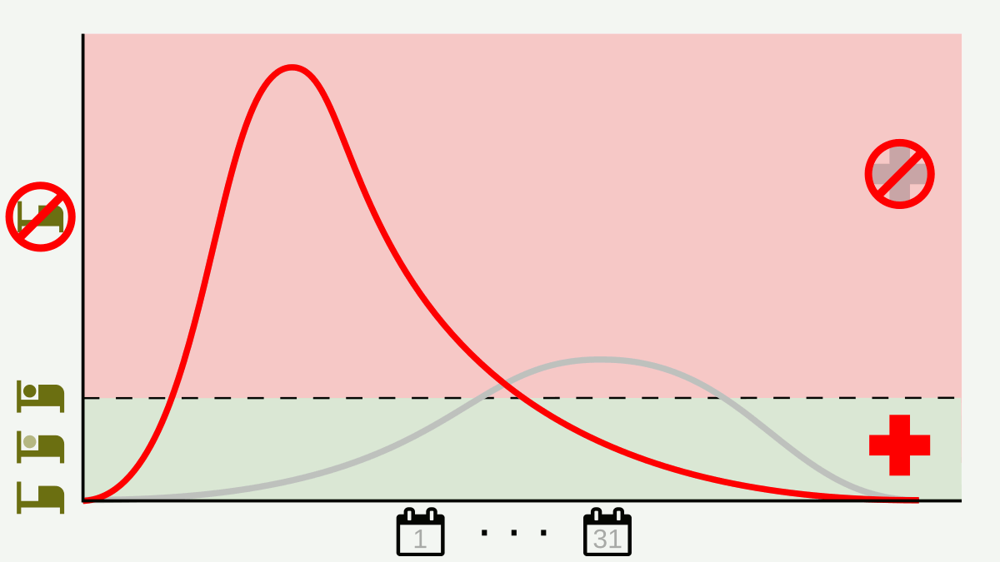

Covid Stats
Flatten the curve
, via Wikimedia Commons" alt="20200410_Flatten_the_curve ">
- Clean your hands often
- Cough or sneeze in your bent elbow - not your hands!
- Avoid touching your eyes, nose and mouth
- Limit social gatherings and time spent in crowded places
- Avoid close contact with someone who is sick
- Clean and disinfect frequently touched objects and surfaces